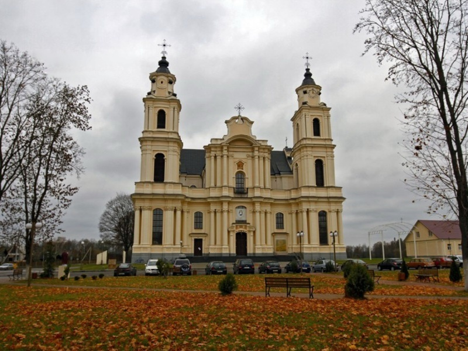

Национальный санктуарий Матери Божьей Будславской (Нацыянальны санктуарый Маці Божай Будслаўскай) — католический храм в агрогородке Будслав (Мядельский район Минской области Беларуси); памятник архитектуры и истории. Один из четырех храмов Беларуси, носящих титул малая базилика.
Впервые упоминается в документах в 1504 г., когда великий князь ВКЛ Александр подарил виленским бернардинцам (ветвь францисканцев) 6 000 моргов леса над рекой Сервечь в Марковском старостве. Получившие землю монахи жили по 2-4 человека в постройках-будах, имея при этом часовню.
В 1633-1643 гг. в Будславе был построен небольшой каменный костёл по инициативе полоцкого воеводы Януша Кишки и гвардиана виленского монастыря бернардинцев Флориана Колецкого. Часть затрат понес ловчий великий литовский Николай Долмат Исайковский. Руководил строительными работами немецкий каменщик из Полоцка Андреас Кромер. В хронике будславского монастыря записано: «Hanс parvam Ecclesiam Andreas Kromer Faber murarius natione Germanus, Fide Ruthenus de Polocia». В других документах мастер назван как Андрюс Кромер, который в 1647 году заключил договор на строительство костёла Св. Войцеха для минского монастыря бенедектинок. Автор Бернардинской хроники за 1656—1671 гг. отец Томаш Дыгань писал, что поводом для строительства костёла было явление Матери Божьей. В 1643 году мастером по резьбе Петром Грамелем был изготовлен двухъярусный алтарь с 20 золочеными скульптурами святых Ветхого Завета.
В 1750—1756 годах с северной стороны храма на деньги меценатки Варвары Скорульской был построен двухэтажный монастырь в виде буквы П с внутренним двориком. 29 июня 1767 года было начато строительство нового костёла. Инвентарные записи храма сообщают, что возводил костёл гвардиан монастыря Константин Пенс. Существует версия, что автором проекта был И. Фонтана, который был женат на сестре К. Пенса. Спонсорами проекта являлись Ю. Караховский, воевода Огинский, А. Гутарович, А. Укольский, В. Скорульская. Первый каменный костёл стал боковой часовней Святой Варвары.
11 мая 2021 года костёл пострадал от пожара, в результате которого сгорела и обвалилась крыша, были сильно повреждены своды и другие строительные конструкции. Начат сбор средств на восстановление пострадавшей от пожара святыни.
В настоящее время в костёле служат монахи-бернардинцы. Рядом с храмом сохранилось здание плебании (дом священника) XIX века.